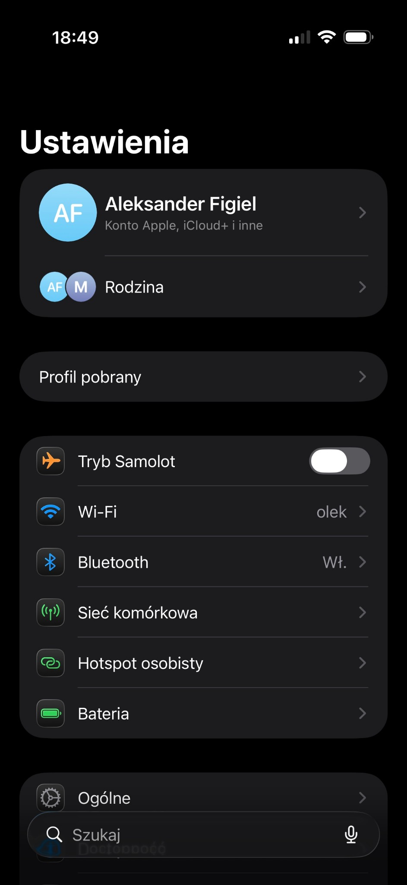

Odczyt UDID (Unique Device Identifier)
Pobierz profil, zainstaluj go na iOS i skopiuj UDID, aby dodać urządzenie do testów aplikacji przez Apple Developer Ad Hoc.
Następną wersję testową aplikacji będziesz mógł zainstalować przez link.
- Otwórz tę stronę na iPhonie lub iPadzie i pobierz profil.
- Otwórz Ustawienia → Profil pobrany i wybierz Instaluj. Jeśli iPhone zapyta o kod, wpisz go wyłącznie w Ustawieniach. iOS może uruchomić dodatkowo standardowe, godzinne odliczanie Apple przed instalacją profilu. Możesz wtedy normalnie korzystać z telefonu. Po odliczaniu wróć do Ustawień i dokończ instalację - dopiero wtedy otworzy się strona z UDID.

- Po instalacji wrócisz na tę stronę z UDID. Skopiuj go i przekaż w odpowiednie miejsce, aby rozpocząć testy Ad Hoc. Następnie możesz usunąć profil.
- Przed uruchomieniem aplikacji włącz Ustawienia → Prywatność i ochrona → Tryb dewelopera, uruchom ponownie iPhone’a i potwierdź.
Twój UDID
Wklej ten identyfikator w wiadomości do Aleksandra.